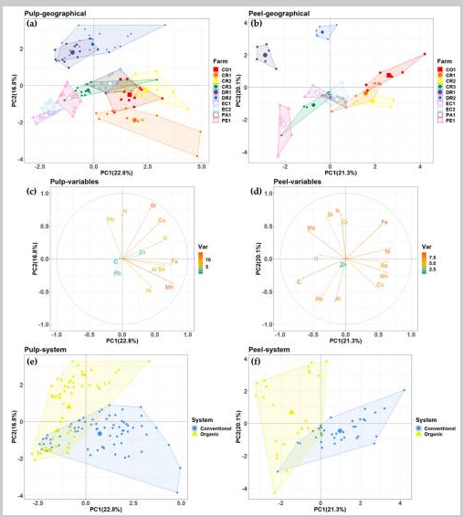

1. Presentació del projecte
Aquest projecte consisteix a comparar la informació que podem obtenir mitjançant una eina d'intel·ligència artificial amb la informació publicada en estudis científics que podem consultar a Google Acadèmic.
El tema escollit és el plàtan i les diferències entre el cultiu ecològic i el cultiu convencional. L'objectiu és aprendre a buscar informació, comprovar-ne la fiabilitat i identificar les fonts utilitzades.
2. Objectius
- Conèixer les diferències entre els dos sistemes de cultiu.
- Utilitzar la intel·ligència artificial per obtenir una primera explicació.
- Buscar estudis científics a Google Acadèmic.
- Comparar la informació i comprovar si està documentada.
- Aprendre a citar les fonts consultades.
3. Plàtan ecològic i convencional
Plàtan ecològic
El cultiu ecològic segueix unes normes específiques sobre l'ús de fertilitzants i productes fitosanitaris. Dona importància a la protecció del sòl i a la gestió dels recursos naturals.
Plàtan convencional
El cultiu convencional pot utilitzar fertilitzants minerals i productes fitosanitaris autoritzats per controlar plagues i malalties. Les pràctiques concretes depenen de la plantació i de la normativa aplicable.
Les diferències reals s'han de comprovar a partir de les dades de cada estudi. No es pot afirmar que tots els plàtans ecològics o convencionals siguin iguals.
4. Gràfic d'un estudi científic
La figura següent conté sis gràfics científics que comparen mostres de plàtan. S'hi estudien la polpa, la pell, l'origen geogràfic i el sistema de cultiu.

Els gràfics permeten observar com es distribueixen les mostres segons diferents variables. Per interpretar-los correctament, cal llegir els eixos, la llegenda i l'explicació que acompanya la figura en l'article original.
5. IA i Google Acadèmic
| Intel·ligència artificial | Google Acadèmic |
|---|---|
| Pot explicar conceptes de manera senzilla. | Permet trobar articles i publicacions científiques. |
| Pot resumir informació ràpidament. | Permet consultar les fonts originals. |
| Cal comprovar les afirmacions i les referències. | Cal llegir els estudis i valorar-ne la qualitat. |
Les dues eines poden ser útils, però una resposta generada per IA no substitueix la consulta de les fonts científiques originals.
6. Conclusió
Aquest projecte mostra que la intel·ligència artificial pot ajudar a comprendre un tema i a començar una recerca. Google Acadèmic permet localitzar estudis científics que ajuden a comprovar la informació.
Per obtenir una conclusió fiable sobre el plàtan ecològic i el convencional, cal consultar les dades de l'estudi, interpretar els gràfics i indicar les fonts.
7. Fonts consultades
L'article científic original és la font que cal consultar per comprovar la figura i interpretar-ne els resultats.
També es pot utilitzar Google Acadèmic per cercar articles relacionats amb el tema.